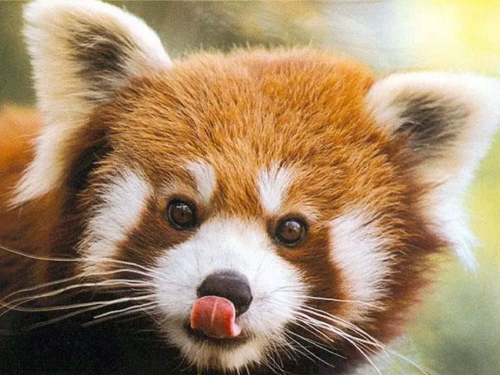
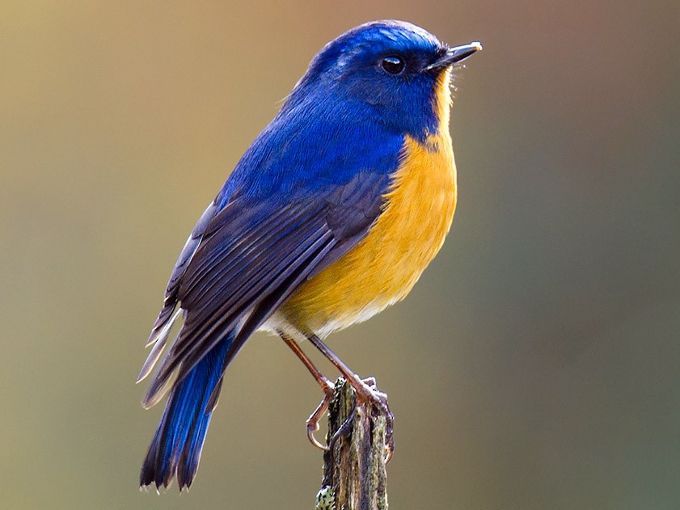

The red panda (Ailurus fulgens), also known as the lesser panda, is a small mammal native to the eastern Himalayas and southwestern China. It has dense reddish-brown fur with a black belly and legs, white-lined ears, a mostly white muzzle and a ringed tail. Its head-to-body length is 51–63.5 cm (20.1–25.0 in) with a 28–48.5 cm (11.0–19.1 in) tail, and it weighs between 3.2 and 15 kg (7.1 and 33.1 lb). It is well adapted to climbing due to its flexible joints and curved semi-retractile claws. The red panda was first formally described in 1825. The two currently recognised subspecies, the Himalayan and the Chinese red panda, genetically diverged about 250,000 years ago. The red panda's place on the evolutionary tree has been debated, but modern genetic evidence places it in close affinity with raccoons, weasels, and skunks. It is not closely related to the giant panda, which is a bear, though both possess elongated wrist bones or "false thumbs" used for grasping bamboo. The evolutionary lineage of the red panda (Ailuridae) stretches back around 25 to 18 million years ago, as indicated by extinct fossil relatives found in Eurasia and North America.

The rufous-breasted bush robin (Tarsiger hyperythrus) is a species of bird in the family Muscicapidae. It is found in Bangladesh, Bhutan, southwestern China, northeast India, northern Myanmar and Nepal.[1] Its natural habitat is temperate forests